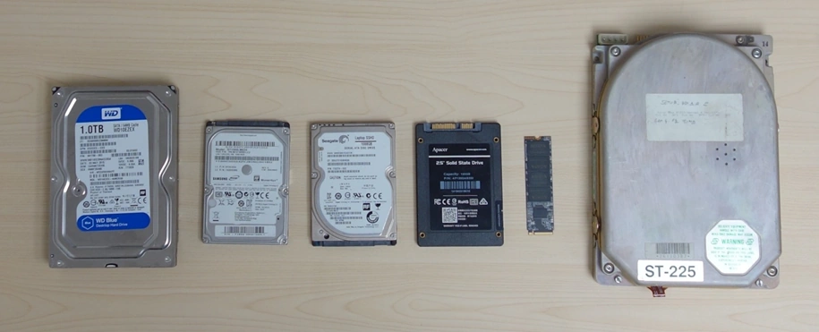

Úložiště
Úložiště slouží k trvalému ukládání dat v počítači. Na rozdíl od operační paměti jde o nevolatilní paměť, takže data zůstávají zachovaná i po vypnutí počítače nebo odpojení napájení.
Na úložišti je uložený operační systém, programy i uživatelská data. Typ a rychlost použitého úložiště mají velký vliv na rychlost startu systému, načítání aplikací i celkovou odezvu počítače.
V dnešních stolních počítačích se používají hlavně dva typy úložišť – SSD (Solid-State Drive) a klasické pevné disky HDD. SSD mohou využívat rozhraní SATA nebo PCI Express, zatímco běžné pevné disky používají pouze SATA.
V minulosti existovaly také takzvané SSHD disky, které kombinovaly klasický plotnový disk s menší flash pamětí. Řadič disku do ní ukládal často používaná data, což pomáhalo zrychlit například start operačního systému. Dnes už se s SSHD disky setkáte spíše výjimečně ve starém notebooku.
SSD
SSD (Solid State Drive) používá polovodičové paměťové čipy NAND flash a neobsahuje žádné pohyblivé části. Díky tomu má velmi krátkou přístupovou dobu, vysokou rychlost čtení a zápisu a zároveň je výrazně odolnější proti otřesům než klasický pevný disk. Právě kvůli rychlosti je dnes ideální instalovat operační systém na SSD. Rozdíl oproti klasickému HDD bývá při běžném používání počítače velmi výrazný. Nevýhodou SSD bývá vyšší cena za jednotku kapacity, omezený počet přepisů paměťových buněk a horší možnost obnovy dat při selhání disku.
Hlavní parametry při výběru SSD disku
-
Rozhraní
SSD může používat rozhraní SATA nebo PCI Express. V moderním počítači je dnes ideální SSD ve formátu M.2 s podporou NVMe na rozhraní PCI Express 4.0 nebo 5.0, které nabízí výrazně vyšší rychlosti než klasické SATA SSD. Cenový rozdíl už často není výrazný, takže výhody PCI Express obvykle převažují. SATA SSD má stále smysl například při upgradu staršího počítače bez M.2 slotu nebo pokud už jsou všechny M.2 sloty obsazené. Existují také rozšiřující karty do PCI Express slotu, které umožňují připojit jeden nebo více NVMe disků. Před použitím je ale dobré ověřit, jestli z takové karty umí základní deska bootovat. Ne každý M.2 disk zároveň používá NVMe. Existují i M.2 SSD využívající SATA, jejichž výkon je podobný klasickým 2,5" SATA SSD. -
Kapacita
U běžného stolního počítače se dnes kapacita SSD pohybuje od stovek GB po jednotky TB. Vhodná velikost závisí hlavně na tom, jak bude počítač používán. -
Rychlost čtení a zápisu
Výrobci často uvádějí hlavně sekvenční rychlosti čtení a zápisu, které se u moderních NVMe disků pohybují v jednotkách GB/s.Při běžném používání ale nejsou sekvenční rychlosti vždy nejdůležitější. Velký vliv na skutečný pocit z rychlosti systému má hlavně náhodný přístup k datům (random read/write), tedy práce s velkým množstvím malých souborů uložených na různých místech disku.
Výkon náhodného přístupu bývá často vyjadřován pomocí IOPS (Input/Output Operations Per Second), tedy počtem operací za sekundu. Právě tento parametr výrazně ovlivňuje rychlost startu systému, načítání aplikací nebo celkovou odezvu počítače.
Některé SSD disky obsahují vlastní DRAM cache, která slouží jako rychlá paměť pro mapovací tabulky dat. Levnější modely mohou místo toho využívat technologii Host Memory Buffer (HMB), která používá část operační paměti počítače. Takové řešení je levnější, ale může mít nižší výkon hlavně při náhodném přístupu k datům.
-
Typ paměťových buněk
SSD ukládá data do NAND flash buněk. Každá buňka uchovává elektrický náboj, který reprezentuje uloženou informaci. Podle počtu bitů uložených v jedné buňce existuje několik typů pamětí. Typ buněk ovlivňuje rychlost, cenu i životnost SSD, protože každá buňka zvládne pouze omezený počet přepisů.-
SLC (Single Level Cell)
Do jedné buňky ukládá jeden bit. Nabízí extrémně vysokou rychlost i životnost, ale kvůli ceně se v běžných počítačích prakticky nepoužívá. -
MLC (Multi Level Cell)
Do jedné buňky ukládá dva bity. Nabízí vyšší kapacitu než SLC, ale dnes se kvůli ceně používá hlavně v profesionální sféře. -
TLC (Triple Level Cell)
Ukládá tři bity do jedné buňky. Dnes jde o nejběžnější typ pamětí u spotřebitelských SSD disků. Nabízí dobrý poměr ceny, výkonu a životnosti. -
QLC (Quad Level Cell)
Do jedné buňky ukládá čtyři bity. Používá se hlavně u levnějších SSD, ale má nejnižší životnost a pomalejší zápis.
Moderní SSD disky často využívají takzvanou SLC cache. Řadič při zápisu do TLC nebo QLC buněk dočasně používá jednodušší režim se dvěma stavy, čímž výrazně zrychlí zápis dat. Později se data při nižší zátěži přepíšou standardním způsobem podle typu použité paměti. U starších SSD měla SLC cache pevnou velikost. Novější disky často používají dynamickou cache, která se mění podle volného místa na disku.
-
SLC (Single Level Cell)
-
Životnost disku (TBW)
Každá NAND flash buňka zvládne pouze omezený počet přepisů. Proto výrobci uvádějí parametr TBW (Total Bytes Written), který vyjadřuje celkové množství dat, které lze na disk zapsat během garantované životnosti.Hodnota TBW se obvykle udává v terabajtech a závisí hlavně na typu buněk a kapacitě disku. Obecně platí, že větší disky mají vyšší TBW, protože zápisy lze rozložit mezi větší množství buněk.
SSD zároveň používají technologii wear leveling, která rovnoměrně rozděluje zápisy mezi jednotlivé paměťové buňky a pomáhá prodlužovat životnost disku. Při běžném domácím používání představuje TBW spíše teoretické omezení. I levnější SSD totiž často zvládnou zapsat stovky terabajtů dat, což odpovídá mnoha letům běžného provozu.
HDD - Pevný disk
HDD (Hard Disk Drive), tedy klasický pevný disk, ukládá data na rotující magnetické plotny. O čtení a zápis dat se stará pohyblivá hlava, která se přesouvá nad povrchem ploten. HDD obsahuje mechanické části, což výrazně ovlivňuje jeho rychlost, hlučnost i odolnost vůči otřesům. Přestože jsou dnes HDD postupně nahrazovány SSD disky, stále dávají smysl jako sekundární úložiště pro větší množství dat. Jejich hlavní výhodou zůstává vysoká kapacita a velmi příznivá cena za gigabajt prostoru.
Hlavní parametry při výběru HDD
-
Kapacita
Moderní HDD se pohybují od jednotek až po nižší desítky TB. Při výběru je dobré sledovat hlavně poměr ceny a kapacity. -
Rozhraní
Dnes se téměř výhradně používá SATA, přičemž verze rozhraní SATA I, II a III jsou navzájem kompatibilní. Maximální rychlost SATA III je 6 Gb/s, což je ale stále více, než běžný HDD dokáže využít.U použitých disků v bazarech a na aukčních portálech můžete narazit také na SAS disky, které mohou být občas nabízeny za velmi příznivou cenu. Tyto disky jsou ale určené hlavně pro servery a i když se dá koupit redukční kabel SATA - SAS, bez speciálního SAS řadiče na běžné základní desce většinou fungovat nebudou.
-
Rychlost otáček (RPM) a přístupová doba
Nejčastěji se dnes setkáte s disky o rychlosti 5400 RPM nebo 7200 RPM.Vyšší otáčky znamenají vyšší výkon, ale také vyšší hlučnost, teplotu a spotřebu.
Přístupová doba HDD se skládá z přesunu čtecí hlavy a čekání na otočení správného sektoru pod hlavu.
U 7200 RPM disků bývá seek time přibližně kolem 8 ms a rotační latence kolem 4 ms. Oproti tomu SSD pracují v řádu mikrosekund.
-
Rychlost čtení a zápisu
Moderní HDD dosahují přibližně 100–250 MB/s. Skutečný výkon ale omezuje hlavně mechanická konstrukce disku.Další nevýhodou HDD může být spin-down režim. Pokud je disk delší dobu nečinný, může zastavit plotny kvůli úspoře energie. Při dalším přístupu k datům se ale musí znovu roztočit, což může způsobit několikasekundové zpoždění.
U HDD může docházet také k fragmentaci dat, kdy jsou soubory uložené na více místech disku. Čtecí hlava pak musí více přeskakovat, což zpomaluje práci s daty.
Moderní HDD obsahují také vlastní cache paměť, která slouží k ukládání často používaných dat. Její velikost se dnes běžně pohybuje mezi 64 a 512 MB.
-
Hlučnost
Hluk pevného disku vzniká otáčením ploten a pohybem čtecích hlav. Některé enterprise disky používají helium, které snižuje odpor prostředí uvnitř disku a pomáhá chlazení. Díky tomu bývají tyto disky zpravidla méně hlučné. Hlučnost HDD se běžně pohybuje kolem 20–30 dB. -
Formát
HDD se vyrábějí hlavně ve velikostech 3,5" a 2,5". Ve stolních počítačích se nejčastěji používají 3,5" modely. -
Technologie zápisu dat
-
CMR (Conventional Magnetic Recording)
Klasická technologie zápisu bez překrývání stop. Nabízí stabilní výkon při čtení i zápisu. -
SMR (Shingled Magnetic Recording)
Technologie, při které se jednotlivé stopy částečně překrývají. Díky tomu lze zvýšit kapacitu disku. Nevýhodou SMR je pomalejší přepis dat při častém zápisu. Pro archivaci nebo běžné datové úložiště ale může být stále vhodnou volbou. -
HAMR (Heat-Assisted Magnetic Recording)
Technologie využívající lokální zahřívání média laserem, která umožňuje uložit více dat na menší plochu. -
MAMR (Microwave-Assisted Magnetic Recording)
Technologie využívající mikrovlnné elektromagnetické pole pro zlepšení zápisu dat.
-
CMR (Conventional Magnetic Recording)
Na fotografii níže je zleva vidět klasický 3,5" HDD, menší 2,5" HDD, hybridní SSHD, 2,5" SSD a moderní M.2 SSD. Pro zajímavost je na konci řady také starý MFM disk formátu 5,25" s kapacitou 20 MB. Moderní M.2 SSD vedle něj má kapacitu 2 TB, tedy přibližně 100 000× více dat při výrazně menších rozměrech.
